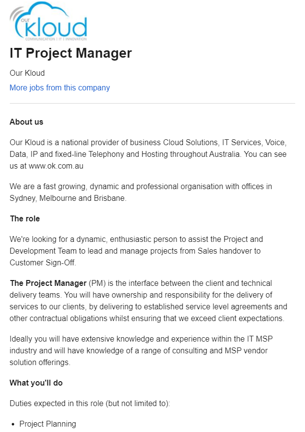
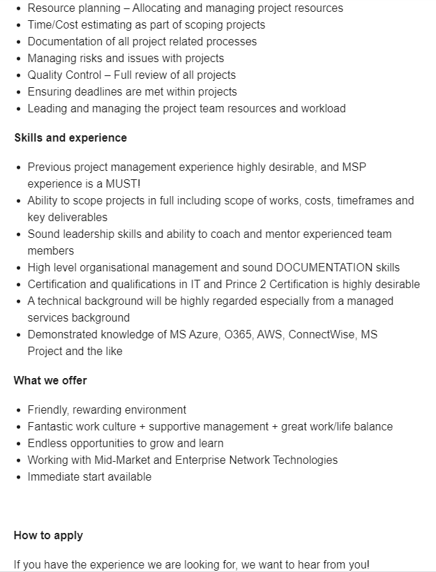
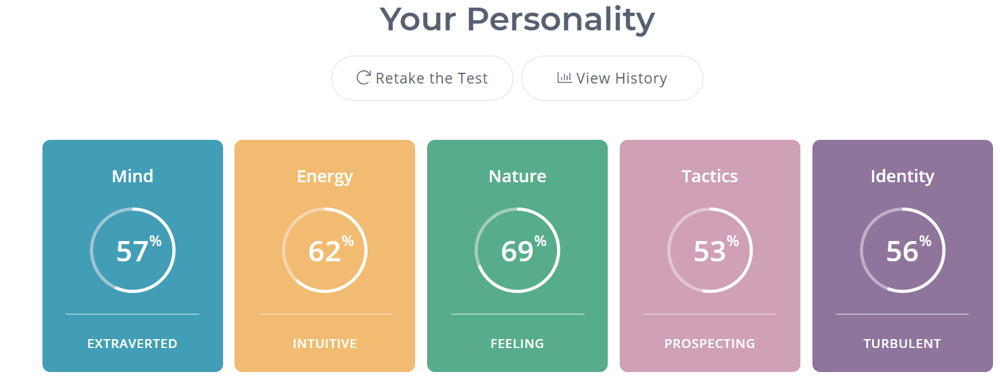
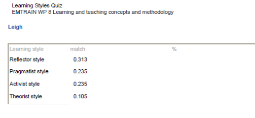
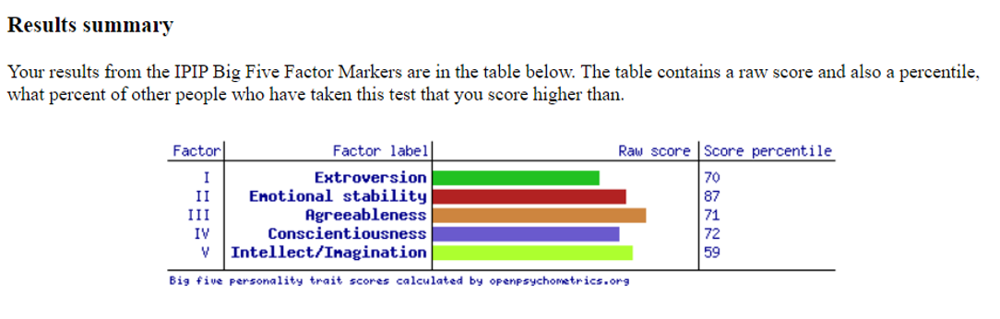

I am Leigh Keane, and I live in Thirroul, a beachside village in the northern suburbs of Wollongong.
I was born in and lived in Tasmania until my mid twenties where I started an Arts degree at UTAS. Being young, foolish and easily sidetracked, I neglected to complete my degree and have been kicking myself ever since. Whilst I don’t know how far I will go this time as a part time student, I am keen to make the most of this study.
Always restless and looking to broaden my horizons, I moved to Sydney in 1997 which at the time was a big step, but I am so grateful that I did.
After meeting in 2005 on AFL Grand Final Day, I married my wife Kym in 2009 - we celebrate grand final day as our main anniversary still.
Shortly after getting married, we moved back to Tasmania for almost 5 years – I had to get it out of my system - before returning to Sydney in 2015.
We have two young daughters (Stella 7 and Georgina 4) who keep us pretty busy.
I work in Sales for Teletrac Navman, the leader in vehicle “telematics” in the ANZ region. Vehicle telematics encompasses the capture of data from GPS tracking and vehicle movement as well as other inputs into the system using different hardware sensors – driver identification, harsh driving, temperature, vehicle canbus data etc. I like this industry as the integration of technologies is growing, and it also offers great insights into how all sorts of assets are used.
Our office (when I have to go) is in Macquarie Park which is a bit of a hike, so even outside of Covid I work from home quite a bit.
When I do get spare time I like to keep fit, work in our garden, cheer on the North Melbourne Kangaroos, brew beer, play my guitar and I also read a lot. After a summer of crazy bushfires I also decided to join the RFS and have recently completed my bush firefighter training.
While I did have a computer and messed around with BASIC code when I was young, I think that my real interest in IT has largely been driven by my changing employment.
In my early career I worked in production coordination roles in the print and mail industry where I would be the interface between the customer, IT, and the production floor. My role was very much instructional – taking the client brief and splitting it up for the different internal departments, then following everything through to completion.
I then moved into project management which in truth was kind of more of the same, but with the onboarding of new customers. Later, after a 4 year stint as an account manager, I changed tack and managed a document scanning bureau in Hobart for nearly 5 years. We managed to win Best ICT Service at the Tas ICT Awards in both 2012 and 2013 which was amazing for our small business.
There was a little bit of industry overlap in this role, but I got to be more hands on – working with print files and paper, as well as a range of software products to manipulate and index images. I really enjoyed the hands-on nature of that role, but I was lured back to Sydney and worked in a true project management role for Fuiji Xerox Document Management Services.
It was here that I was exposed to a higher level of professional IT working environment. We had a Project Management Office to oversee and maintain standards. As well as a couple of customer IT projects, I took on some internal projects that were a great experience including a key server migration and implementation of a key security tool. It took me a few years to get over leaving that job and wondering whether I had made the right decision for the long-term.
In 2015 I was talked into a relationship management role in a totally new industry to me with Teletrac Navman.
I see that in my career it has generally been my role to get IT professionals – programmers, developers, DBA’s, and architects etc - to fulfil key customer and project tasks. However, at the same time I have always been more hands-on with software than my colleagues in the same roles.
While I currently work in Sales, I still find myself taking calls from customers to assist and do so happily rather than flicking them on to our support team.
At the same time, I am aware of the gulf in my broader technical knowledge, and I would like to overcome this in order to both understand the back end product better, and to be able to communicate better with IT professionals.
In my personal life I would like to learn some programming and have recently bought a Raspberry Pi. It would be great to complete some personal projects and get my daughters interested in IT and problem solving. I am keen to embrace this course and the complexities that I will be exposed to.
 
This sounds like a great role, project planning and seeing through delivery to the customer in an IT intensive environment. This role appeals to me me given that I do have project management experience, and the technology isn’t too far removed from what I have worked on in the past. Because of the focus on cloud, and my time away from project management, I am attracted to some of the challenges.
In terms of qualifcations the ad clearly states that the PM must have Managing Successful Programmes (MSP) experience as well as certification in IT and Prince 2 (project management methodology). MSP and Prince 2 are qualifications that I would need to gain, though these are standard industry courses offered widely.
Demonstrated knowledge of other tools and platforms including AWS and ConnectWise is also listed. I figure that I would have the opportunity for exposure to these through my RMIT study.
In terms of the other skills and experience required, I believe that I can meet those requirements having experience mentoring and managing teams previously, and I have a Diploma of Management.
The opportunity for customer engagement is a real positive to me in this role. With my background in relationship management and sales, I think that I am covered, but it is the specific IT and project management qualifications that I would need to focus on.
For where I see a shortfall in my skills and experience, I would be prepared to undertake the relevant courses to bridge any gap.
As part of this assignment, I undertook the following online tests:
The aim of the Myer-Briggs Personality Test is to provide a “deeper understanding of what makes you you. Then with these insights you can make more informed decisions, better communicate with others, and build stronger relationships...”(MBTI Online)
Aside from raw scores on a scale for 5 key personality attributes (please see image inserted below), the test provides a categorisation based on this.
In terms of the scores (please see image inserted below), there are no truly polarizing scores for me, suggesting no overly dominant traits. I scored slightly higher on the extraversion scale (57%) compared to introversion (43%) which seems reasonable to my self-assessment. I move comfortably in the adult world and whist I like time to myself, I am equally happy with social interaction as long as I’m not the centre of attention.
Intuitive (62%) versus Observant (38%) was interesting to unpick. Those with the intuitive trait seek new ideas and possibilities and tend to exercise their imagination. They tend to question and wonder. Alternatively, the observant personality sounds more grounded in the present making them more focussed and practical. Again this has been an interesting spectrum to ponder and I suspect that the results are pretty close to the mark for me. I do have a restless side and can get bored easily. I am prone to whims and thinking about things “out there” like where we should move to next. From a group work perspective I guess the challenge here is to stay on track and stay focussed, but also not rein it in too much and unimaginative.
Most dominant of my scores was toward feeling (69%) against thinking (31%). I have reflected on this score a bit. While I am certainly caring and empathetic, I do think the way that I see the world is largely grounded in logic so I would have expected to score higher in thinking than feeling.
The Judging v Prospecting scale relates to a tactical approach to life with Judging individuals being more structured and preferring things mapped out for them. Prospecting personality types are more likely to figure things out as they go. I was unfamiliar with this scale as a concept and I landed almost in the middle, 53% to 47 % in favour of prospecting. I have come to think of this as a pretty good balance – not unstructured necessarily but flexible enough to roll with changes. I think this is pretty apt.
Finally we have the Identity scale with a spectrum of Assertive to Turbulent. I scored 44% to 56% in favour of turbulent. This scale is said to affect all other scales and reflect how confident we are in our abilities and decisions, how we respond to success and failure, criticism and feedback.
Assertive individuals are more self-assured and confident, less prone to stress and worry. Turbulent people being less self-assured are considered more success driven and perfectionistic in order to make up for the lack of self confidence. They are also more prone to regret and taking on criticism. I think that my score here is pretty fair. I think with age and becoming a parent I have crept back closer to assertive, but I do recognise the turbulent trait when described as it is. I am prone to overthinking the past and in group situations, particularly with those I know less, which can make me guarded about what I say. Whilst also not a walkover, I can struggle with being assertive.
My results saw me categorised me as a Campaigner personality type which falls under the broader banner of Diplomat. It is described as energetic with a real interest in people, enjoying the social and emotional connections that they make with others.
They are also described as idealistic and intuitive, which while sometimes a strength can lead to over-reading situations and complicating plans that would otherwise have been simple.
Strengths listed include curiosity, being observant, having energy and enthusiasm, being a good communicator and being friendly.
The Campaigners potential weaknesses are listed as poor practical skills, difficulty focussing, overthinking, getting stressed easily, being highly emotional and being independent to a fault. Interestingly. I took this test twice with a gap of 10 days and got the same result.
So my assignment to this type is driven by my scores above. As noted, in my own self-reflection I see myself as more practical and keen to make headway rather than get caught up in detail, especially if I have a task or deadline. I think that the description of positive traits was perhaps more apt for when I was younger than it might be now.
Aside from the poor practical skills claim, I’d agree that I can have trouble focussing on one task and it is something that I work on personally by trying to stay organised - so it doesn’t come naturally. I learned long ago to work with a to-do-list, which at work I carry around like a child might a security blanket.
I am also usually pretty calm but I can over-think and get stressed if I think that a team is not making any progress and a deadline is looming. Adding the points from the score analysis above, I need to let myself be more confident and assert myself better in a group environment, and not let the people pleaser in me to dominate.
This test suggested matched me most highly with the Reflector style, then with the Pragmatist style someway back.
My feeling is that this is accurate. While I usually catch on quickly, I do like to take time to synthesize ideas. I do also work well in small groups rather than large ones. More intimate groups and coaching work with me, and I am open to self examination and feedback from others. I find if there is a leadership void I will generally step in, however when surrounded by strong personalities I can let things roll on.
In a group assignment situation this will hopefully help me get along with others, but it may mean that I work a bit slower and over-think.
Assuming that I have understood the results I also think that there is some relevance in this test to me.
I am certainly not an extrovert, but higher along the spectrum to extroversion than introversion.This is consistent with the Myers-Briggs result.
I see myself as emotionally stable, agreeable and conscientious but do hold a little in reserve at times.
I would never label myself as creative or imaginative as strong traits either, though I am not lacking in these.
I guess the results point to me being largely pleasant and normal (I tried the Dark Triad Traits test and no concerns there), so I don't think that the results here point to any specific concerns with the group work tasks.
In all I think the testing has made me reflective of myself, how I learn and operate best, but also what I need to be mindful of when collaborating in a group, particularly with regard to making an effort to be heard, staying focused and not overthinking.
The purpose of this project is to indicate whether a rainwater tank has water in it or not, and if so, how much.
Given recent droughts, rainwater tanks have become more prevalent and in some areas are mandated by councils on new buildings. Generally, there is no indicator on the tank as to the water level, so a user doesn’t know whether the water that they are using is coming from the tank or the mains. Given that mains water comes at a cost, the presence or absence of water in a tank may inform the water use decisions of the householder.
I have a rainwater tank that I use to water the garden, but I have no idea as to the status of the water in the tank. The tank is used to water the garden but when empty the pump switches over to mains supply so I may be using mains water inadvertently. The water tank is down the side of the house and accessing it is difficult. Currently the only way know whether there is water in the tank is to bang on the side of the tank which is not particularly accurate, or get up on a ladder to look inside. I mentioned to a friend that it would be handy to know the tank water status and he wholeheartely agreed, noting he'd had the same thought. There do appear to be some serious solutions out there particularly for industry, but in terms of retrofitting to existing home tanks there doesn't appear to be much out there.
In researching this project I see that it is an issue that other Raspberry Pi enthusiasts have looked to solve. Given that I am fresh to programming and working with this hardware, I am sure that there will be challenges for me to work out how to overcome.
The level of water within the tank can be captured using an ultrasonic distance sensor mounted to the inside roof of the tank. This would be connected to the Raspberry Pi via usb.
A configured LED would in turn be plugged into the Raspberry Pi via usb and all hardware housed in a waterproof box.
Initially I looked at a water sensor mounted on a metal rod fastened to the wall of the tank and placed say 6 inches from the bottom of the tank. This would provide essentially a "yes" or "no" condition to the project, but I don't like the idea of putting anything in the tank. The discovery of the ultrasonic distance sensor add some additional data to the solution and removes this submersion problem, as long as the tank lid doesn't get wet and drown the sensor.
An understanding of how the Raspberry Pi works will be necessary along with the programming skills to write the code.
The outcome for this project would be a basic visual indicating system to show the water level within the tank. Using for example a 10 LED output, 5 illuminated LED’s would indicate that the tank is half full and these could be coloured green and red with red being empty.
If the project is successful, the user will be aware of the water level within the tank and be able to use their water in a more informed way. There would also be an opportunity to expand the functionality and integrate with an automated irrigation system.